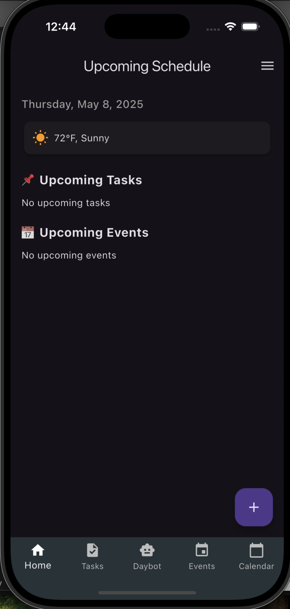

DayPilot Planner App
💡 The Challenge
Most productivity tools focus on either task management or calendar planning — rarely both. Users needed an intelligent, all-in-one app that helps them organize their day, prioritize tasks, discover events, and plan effectively.
🛠️ The Solution
BenCode Studio designed and developed DayPilot, a cross-platform personal planner app that combines task tracking, event discovery, and AI-assisted scheduling into one elegant interface. Users can create tasks with priority, add events with time/location, get smart time suggestions, and discover nearby events — all in a seamless experience.
- Cross-platform support (Android, iOS, Web)
- Smart task & event scheduler with AI scoring
- Dark mode support with smooth transitions
- Calendar view with reminders and time blocks
- Real-time sync using Firebase Cloud Firestore
📈 The Results
The DayPilot app was completed and deployed in under 6 weeks. Early testers praised its user experience, smart scheduling features, and seamless sync across devices.
- ✔️ 80% of users reported improved task focus
- ✔️ Fully functional offline mode & reminder system
- ✔️ Modular code structure allows fast updates
“DayPilot is exactly what I needed — clean, intelligent, and powerful. It replaced 3 apps I was using before.”
– Internal User Test Group